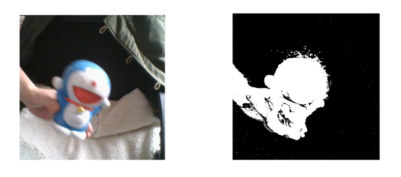

滤波与阈值分割
滤波
滤波是一种卷积操作，常用于图像的预处理。低通滤波器就是允许低频信号通过，在图像中边缘和噪点都相当于高频部分，所以低通滤波器用于去除噪点、平滑和模糊图像。高通滤波器则反之，用来增强图像边缘，进行锐化处理。
- 低通滤波器是模糊
- 高通滤波器是锐化
常见噪声有椒盐噪声和高斯噪声，椒盐噪声可以理解为斑点，随机出现在图像中的黑点或白点；高斯噪声可以理解为拍摄图片时由于光照等原因造成的噪声。
均值滤波
均值滤波是一种最简单的滤波处理，它取的是卷积核区域内元素的均值，用cv2.blur()实现，如3×3的卷积核：
1 | img = cv2.imread('lena.jpg') |
方框滤波
方框滤波跟均值滤波很像，如3×3的滤波核如下：
用cv2.boxFilter()函数实现，当
1 | # 前面的均值滤波也可以用方框滤波实现 |
- 参数2：
ddtype为目标的数据类型，取-1表示和原图相同 - 可选参数
normalize为True的时候，方框滤波就是均值滤波，上式中的a就等于1/9；normalize为False的时候，a=1，相当于求区域内的像素和。
高斯滤波
前面两种滤波方式，卷积核内的每个值都一样，也就是说图像区域中每个像素的权重也就一样。高斯滤波的卷积核权重并不相同：中间像素点权重最高，越远离中心的像素权重越小。显然这种处理元素间权值的方式更加合理一些。图像是2维的，所以我们需要使用2维的高斯函数，比如OpenCV中默认的3×3的高斯卷积核：
OpenCV中对应函数为cv2.GaussianBlur(src,ksize,sigmaX)：
1 | # 高斯滤波 |
参数3 σx值越大，模糊效果越明显。高斯滤波相比均值滤波效率要慢，但可以有效消除高斯噪声，能保留更多的图像细节，所以经常被称为最有用的滤波器。
中值滤波
中值又叫中位数，是所有数排序后取中间的值。中值滤波就是用区域内的中值来代替本像素值，所以那种孤立的斑点，如0或255很容易消除掉，适用于去除椒盐噪声和斑点噪声。中值是一种非线性操作，效率相比前面几种线性滤波要慢。
1 | # 中值滤波 |
双边滤波
模糊操作基本都会损失掉图像细节信息，尤其前面介绍的线性滤波器，图像的边缘信息很难保留下来。然而，边缘（edge）信息是图像中很重要的一个特征，所以这才有了另一种非线性滤波双边滤波。双边滤波在高斯滤波的基础上加入了对灰度信息的权重，即在邻域内，灰度值越接近中心点灰度值的点的权重更大，灰度值相差大的点权重越小。此权重大小，则由值域高斯函数确定。两者权重系数相乘，得到最终的卷积模板。
1 | # 双边滤波 |
- 参数2：d – Diameter of each pixel neighborhood that is used during filtering. If it is non-positive, it is computed from
sigmaSpace. - 参数3：sigmaColor – Filter sigma in the color space.
- 参数4：sigmaSpace – Filter sigma in the coordinate space.
padding
不难发现，前面我们用3×3的核对一副6×6的图像进行卷积，得到的是4×4的图，图片缩小了！那怎么办呢？我们可以把原图扩充一圈，再卷积，这个操作叫填充padding。
上面的滤波函数都有一个可选参数borderType用来输入padding类型。
BORDER_CONSTANT
iiiiii|abcdefgh|iiiiiiiwith some specifiedi
BORDER_REPLICATEaaaaaa|abcdefgh|hhhhhhh
BORDER_REFLECTfedcba|abcdefgh|hgfedcb
BORDER_WRAPcdefgh|abcdefgh|abcdefg
BORDER_REFLECT_101gfedcb|abcdefgh|gfedcba
BORDER_TRANSPARENTuvwxyz|absdefgh|ijklmno
BORDER_REFLECT101 same as BORDER_REFLECT_101
BORDER_DEFAULT same as BORDER_REFLECT_101
BORDER_ISOLATED do not look outside of ROI
滤波总结
- 在不知道用什么滤波器好的时候，优先高斯滤波
cv2.GaussianBlur()，然后均值滤波cv2.blur()。 - 斑点和椒盐噪声优先使用中值滤波
cv2.medianBlur()。 - 要去除噪点的同时尽可能保留更多的边缘信息，使用双边滤波
cv2.bilateralFilter()。 - 线性滤波方式：均值滤波、方框滤波、高斯滤波（速度相对快）。
- 非线性滤波方式：中值滤波、双边滤波（速度相对慢）。
阈值分割
固定阈值分割
固定阈值分割很直接，像素点值大于阈值变成一类值，小于阈值变成另一类值。
1 | # 阈值分割 |
cv2.threshold()用来实现阈值分割，ret是return value缩写，代表当前的阈值，暂时不用理会。函数有4个参数：
- 参数1：要处理的原图，一般是灰度图
- 参数2：设定的阈值
- 参数3：最大阈值，一般为255
- 参数4：阈值的方式，主要有5种，详情：ThresholdTypes

最常见的就是前两种，相当于二值化。
自适应阈值
看得出来固定阈值是在整幅图片上应用一个阈值进行分割，它并不适用于明暗分布不均的图片。 cv2.adaptiveThreshold()自适应阈值会每次取图片的一小部分计算阈值，这样图片不同区域的阈值就不尽相同。
1 | import matplotlib.pyplot as plt |
- 参数1：要处理的原图
- 参数2：最大阈值，一般为255
- 参数3：小区域阈值的计算方式
ADAPTIVE_THRESH_MEAN_C：小区域内取均值ADAPTIVE_THRESH_GAUSSIAN_C：小区域内加权求和，权重是个高斯核
- 参数4：阈值方式（跟前面讲的那5种相同）
- 参数5：小区域的面积，如11就是11*11的小块
- 参数6：最终阈值等于小区域计算出的阈值再减去此值
Otsu阈值法
1 | # 先进行高斯滤波，再使用Otsu阈值法 |
$ g $就是前景与背景两类之间的方差，这个值越大，说明前景和背景的差别也就越大，效果越好。Otsu算法便是遍历阈值T，使得$ g $最大，所以又称为最大类间方差法。基本上双峰图片的阈值T在两峰之间的谷底。原文地址
背景差分
背景差分（Background Subtraction, BS）是通过使用静态相机来生成前景蒙版（即包含属于场景中的移动对象的像素的二进制图像）的通用且广泛使用的技术。 顾名思义，BS是在当前帧和背景模型之间执行减法运算，其中场景的静态部分，或者可视为背景的所有内容将被减去，移动对象将会被提取出来。如下图所示。

后台建模包括两个主要步骤：
- 背景初始化
- 当前帧更新
官方给出了下面的例子：
1 | from __future__ import print_function |
关于KNN，MOG2，GMG的区别之后再补充。移动的哆啦A梦如图
